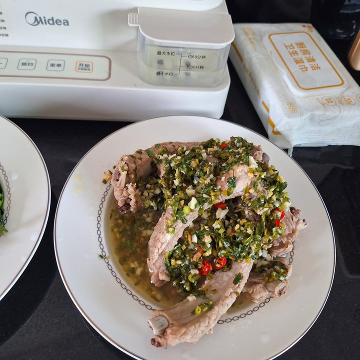
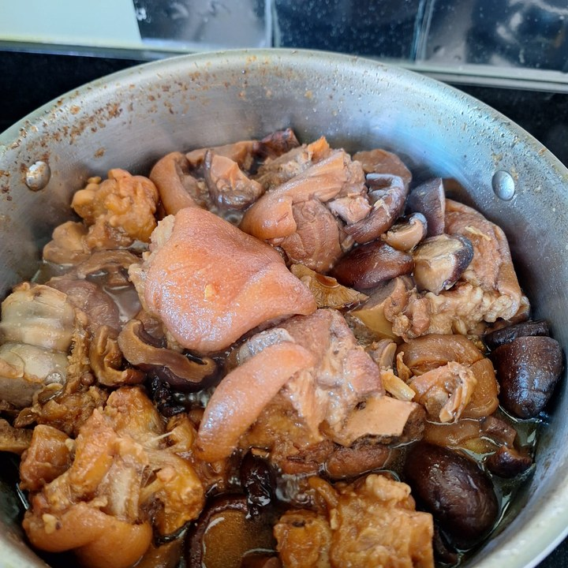
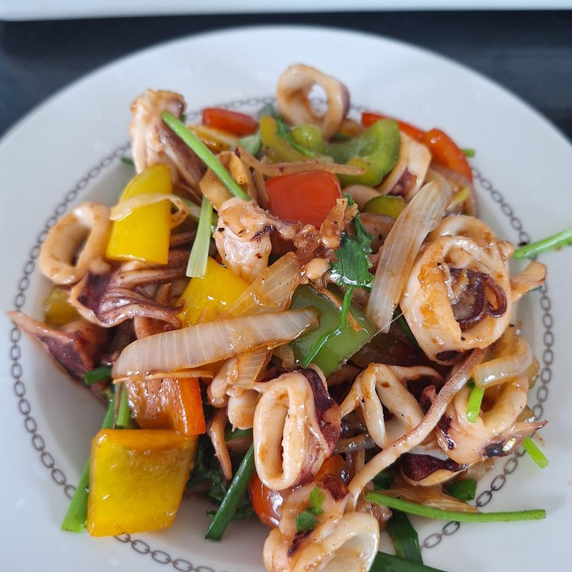
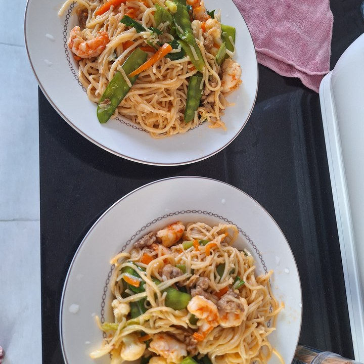
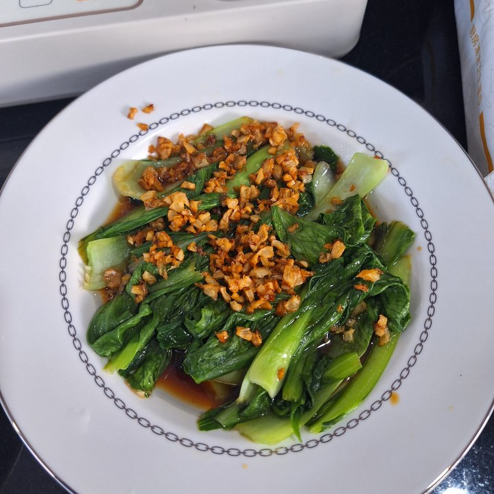
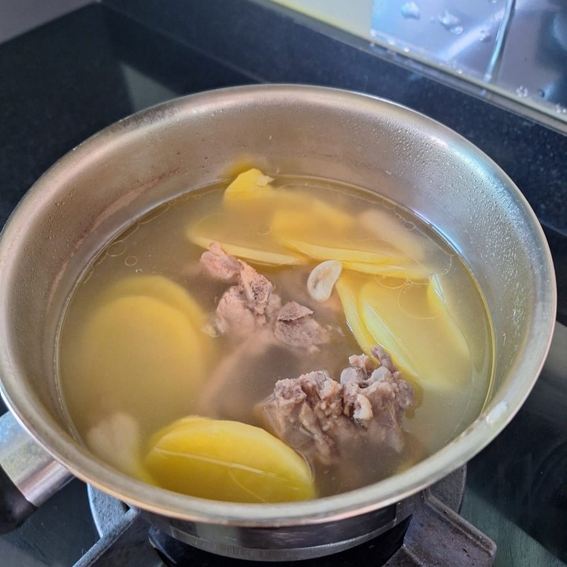

Myanmar · 45 · Elderly care, babies & cooking
Certificates in nurse aid and auxiliary midwifery, and the eldercare to go with them — including a year and a half with a woman who was bedridden after a stroke. Six Singapore households between 2011 and 2023, then fifteen months with babies in Bangkok. Fluent English and some Mandarin.
Trust signals
At a glance
The essentials
Available from
Available now. She is in Thailand, so this is a hire from overseas — a fresh Work Permit and a flight from Bangkok. Ask us and we will confirm the costs.
Why she is available
Her Bangkok placement ended in October 2026. She would rather work in Singapore, where she spent twelve years and the paperwork is simpler — her words: it feels more like a second home.
Nursing certificates
Nurse Aid and Auxiliary Midwife, with a Professional Executive Diploma in Business English besides. Few helpers come with formal care training.
Languages
English fluent, Burmese native, Mandarin intermediate. Four of her Singapore households were Chinese and two were Malay.
The heaviest care she has done
A year and a half with a woman in her sixties who was bedridden after a stroke — the wheelchair, the washing, the feeding, all of it, and the day centre three days a week.
Babies and children
Triplets from five months old and an eighteen-month-old girl in Bangkok. In Singapore, a girl of five, and a girl of six with a teenage brother.
Cooking
Chinese home cooking, by her own photographs — steamed fish, braised pork, soups and greens. Registered for cooking and general household in her Singapore jobs.
Best fit
A household with an elderly person who needs real nursing — or a baby. Those are the two things she has done most, and the certificates sit behind both.
Six Singapore households from 2011 to 2023, then fifteen months in Bangkok.
August 2011 to February 2012. Her first job, at twenty-nine: a woman in her eighties in good health, in a private flat. It did not work out — she was new to the country and to the work — and she transferred after six months.
February 2012 to August 2013 — eighteen months. A woman in her sixties, bedridden after a stroke and in a wheelchair. Tracy did everything: the personal care, the feeding, the cooking and the house, and took her to a day centre three days a week. This is the heaviest work on her record.
July 2014 to March 2016 — twenty months. Two brothers living together, one of them with kidney disease. The cooking and the general household, alongside his care. She saw the contract to its end date.
March 2016 to April 2018 — two years. A Malay family of four: a girl of six and a teenage boy, with the cooking and the house. Another contract served to the end; the family no longer needed a helper once the girl was older.
December 2018 to March 2020 — fifteen months. A Malay family with a daughter of five. She went home for a holiday in March 2020, the borders closed behind her, and she could not get back.
March to September 2023. A woman in her seventies in good health, in a three-room flat — her care, the cooking and the household. It ended after six months.
August 2025 to October 2026 — Bangkok. First a Chinese family with triplets, whom she took at five months old until the family returned to China. Then an eighteen-month-old girl, with no housework and no cooking — the family wanted her to stay. She left because she wants to be back in Singapore.
Where she’d suit next. A household with an elderly person who needs hands-on care — washing, feeding, medicines, a wheelchair — or a family with a baby. She has done both, she has the nursing certificates behind them, and she speaks enough Mandarin for a Chinese household and fluent English for anyone else.
Her employment record, her certificates and her full work history are available to interested families, with her consent.
Her own photographs, from the households she has cooked for.






Tell us a little about your household and we’ll be in touch within 1–2 business days. We’ll only move forward if it feels like a genuine fit.